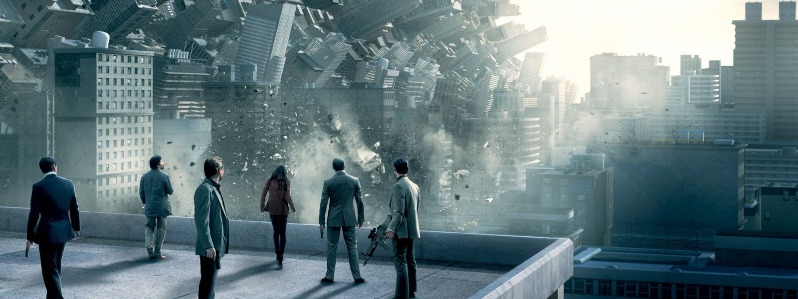

Sinopsis y Contexto
Inception (2010), dirigida por Christopher Nolan,
es una obra maestra de la ciencia ficción que explora los límites de
la mente humana y los sueños. La historia gira en torno a Dom Cobb,
un ladrón especializado en el espionaje subconsciente, quien es
contratado para realizar la tarea inversa: implantar una idea en la
mente de su objetivo. Esta técnica, conocida como "origen"
(inception), pone a prueba la percepción del tiempo, la realidad y
la identidad.
La película mezcla géneros como thriller psicológico, acción y
ciencia ficción, y se ha convertido en un referente moderno del cine
intelectual con alto impacto visual.
Impacto en el Cine
Inception fue aclamada por la crítica y el público
por su narrativa compleja, sus efectos visuales innovadores y su
propuesta filosófica. Se considera una de las películas más
influyentes del siglo XXI, con una estructura que desafía al
espectador y lo invita a múltiples interpretaciones.
Ganó 4 premios Oscar y fue nominada a 8, incluyendo Mejor Película y
Mejor Guion Original, consolidando a Nolan como uno de los cineastas
más visionarios de su generación.
Locaciones y Producción
Inception fue filmada en múltiples locaciones
alrededor del mundo: París (Francia), Tokio (Japón), Los Ángeles
(EE.UU.), Calgary (Canadá) y Tánger (Marruecos). Esta variedad de
escenarios permitió construir visualmente los distintos niveles de
sueño de manera auténtica.
La producción corrió a cargo de Warner Bros. Pictures, Legendary
Pictures y Syncopy. Christopher Nolan también escribió el guion, y
su hermano Jonathan colaboró en la fase conceptual. La música,
compuesta por Hans Zimmer, se convirtió en un ícono del cine
moderno.